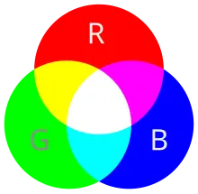
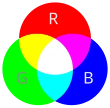

Головна сторінка
10 клас

Головна сторінка
10 клас

Завдання: Вікторина.
Позначте правильну відповідь.
Візуальне відображення інформації, графічний метод подання інформації з метою простоти її сприйняття та засвоєння, а також зацікавленості в тематиці - це ...
Виберіть приклад інфографіки.
Напрямок у мистецтві, який характеризується використанням комп’ютерних технологій для опрацювання та створення художніх творів та збереженням їх у цифровій формі - це ...
Виберіть приклад цифрового зображення.